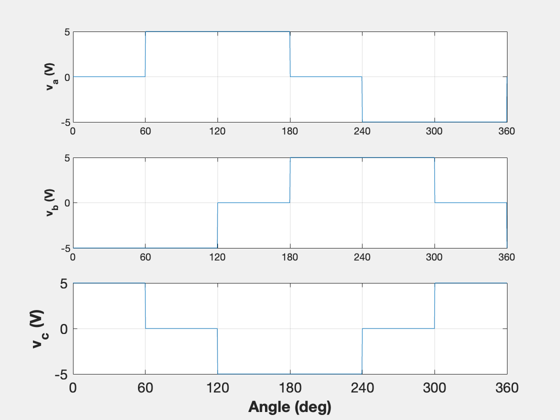
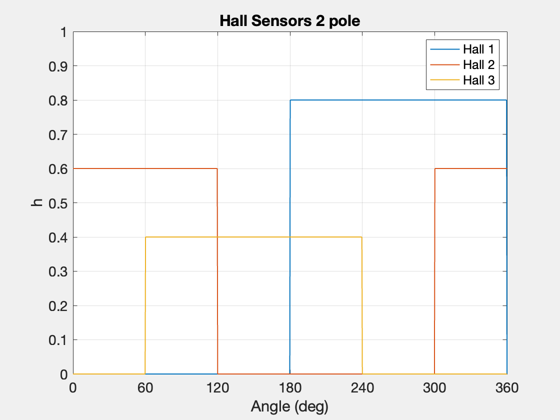
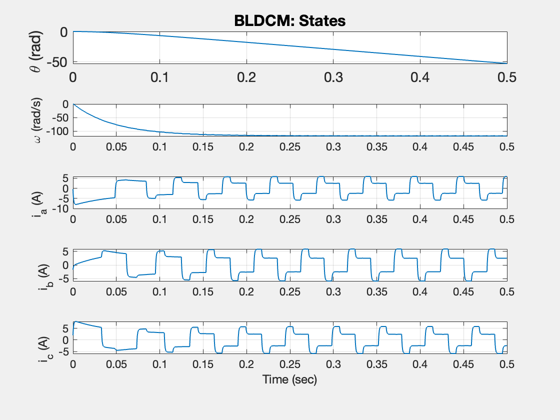
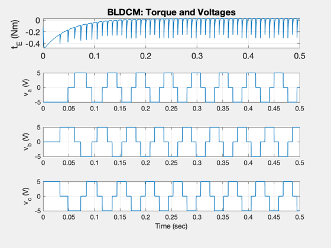

Contents
Brushless DC motor simulation.
The demo first generates a voltage map for 1 electrical revolution
to show the 6 step commutation. This is typical commutation used
in reaction wheels. These leads to torque noise and poor response
at low speeds. You can see the torque noise in the plots.
dT = 0.0002;
tEnd = 0.5;
n = floor(tEnd/dT);
xP = zeros(9,n);
x = [0;0;0;0;0];
d = struct;
d.r = 0.6;
d.l = 0.42e-3;
d.j = 0.0002;
d.kB = 0.1;
d.kT = 0.1;
d.tL = 0;
d.p = 2;
d.dEMF.flux = 0.6;
d.dInverter.dir = -1;
d.dInverter.vS = 5;
d.dFriction = [];
d.fEMF = @BLDCMFlux;
d.fFriction = @BLDCMFriction;
d.fInverter = @BLDCMInverter;
a = linspace(0,2*pi,1000);
vS = zeros(3,1000);
hS = zeros(3,1000);
for k = 1:length(a)
thetaE = d.p*a(k)/2;
f = [ feval(d.fEMF,thetaE, d.dEMF);...
feval(d.fEMF,thetaE-2*pi/3,d.dEMF);...
feval(d.fEMF,thetaE-4*pi/3,d.dEMF)];
[v, hS(:,k)] = BLDCMInverter( f, d.dInverter );
vS(:,k) = v;
end
a = a*180/pi;
hS(1,:) = hS(1,:)*0.8;
hS(2,:) = hS(2,:)*0.6;
hS(3,:) = hS(3,:)*0.4;
c = 'abc';
NewFig('Voltages 2 Pole')
for k = 1:3
subplot(3,1,k)
plot(a,vS(k,:))
grid
YLabelS(sprintf('v_{%s} (V)',c(k)))
set(gca,'xlim',[0 360],'xTick',[0 60 120 180 240 300 360]);
end
XLabelS('Angle (deg)')
set(gca,'fontsize',14);
Plot2D(a,hS,'Angle (deg)','h','Hall Sensors 2 pole');
set(gca,'xlim',[0 360],'ylim',[0 1],'xTick',[0 60 120 180 240 300 360],'fontsize',14);
legend('Hall 1', 'Hall 2', 'Hall 3')
d.p = 2;
for k = 1:n
x = RK4('BLDCMRHS',x,dT,0,d);
[xDot, tE, v] = BLDCMRHS( x, 0, d );
xP(:,k) = [x;tE;v];
end
 
Plot
[t, tL] = TimeLabl((0:(n-1))*dT);
Plot2D( t, xP(1:5,:), tL, {'\theta (rad)' '\omega (rad/s)' 'i_a (A)' 'i_b (A)' 'i_c (A)'}, 'BLDCM: States')
set(gca,'fontsize',14);
Plot2D( t, xP(6:9,:), tL, {'t_E (Nm)' 'v_{a} (V)' 'v_{b} (V)' 'v_{c} (V)' }, 'BLDCM: Torque and Voltages')
set(gca,'fontsize',14);
 